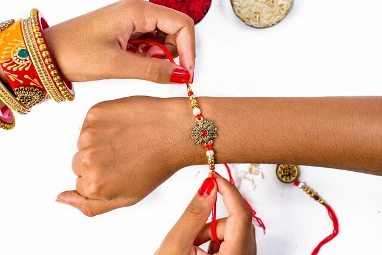
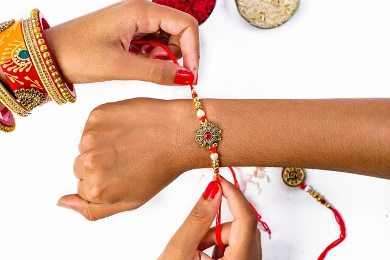

Festivals
Punjabi festivals are various festive celebrations observed by the Punjabis, originating in the Punjab region. The Punjabis are religiously a diverse and that affects the festivals they observe. According to a 2007 estimate, a total of ~75% percent of the Punjabi population is Muslim, accounting about 90 million people, with 97% of Punjabis who live in Pakistan following Islam, in contrast to the remaining 30 million Punjabi Sikhs and Hindus who predominantly live in India.[1] The Punjabi Muslims typically observe the Islamic festivals, do not observe Hindu or Sikh religious festivals, and in Pakistan the official holidays recognize only the Islamic festivals.[2][3] The Punjabi Sikhs and Hindus typically do not observe these, and instead observe historic festivals such as Lohri, Basant and Vaisakhi as seasonal festivals.[4] The Sikh and Hindu festivals are regional official holidays in India, as are major Islamic festivals.[5] Other seasonal Punjabi festivals in India include Teejon (Teeyan) and Maghi.[4] Teeyan is also known as festival of women, as women enjoy it with their friends. On the day of maghi people fly kites and eat their traditional dish khichdi.
 
